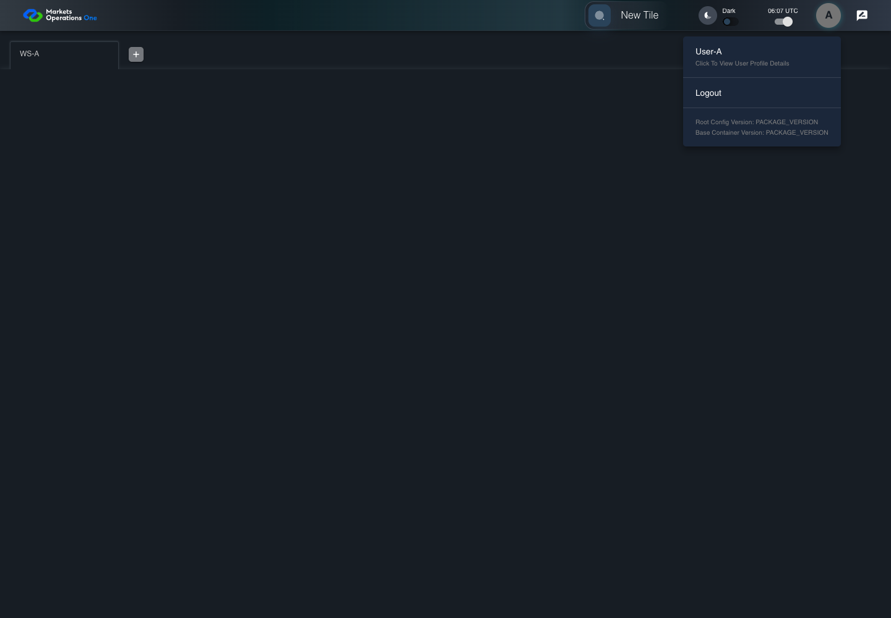

AUTH-038 profile preserves directory text
PASS · application/run-050/auth-038-profile-preserves-directory-text-35dae76d5568-attempt-1 · ACTUAL_APPLICATION_LOCAL_SERVICES
Actual React; controlled callback/login responses; unsigned browser-only credentials; empty seeded WS-A. Provider acceptance and BFF fallback are not verified.
2026-10-22T06:07:39.754Z to 2026-10-22T06:07:42.862Z
Assertions and result · Artifact manifest · Exact run inputs and source hashes
Result SHA-256:1f29e29f4b55f7f2088f72848e432398a1861ba217c926bc9ed4d197db4c54acMachine observations
- directory-response-fixture.json
54c509545f2a247a3e3bf7146a1772ef1cd0ded15ee349c05b4e2f949c09808d - profile-assertions.json
c21a4986d30f18037e7149fbb232a21bf3bae169a29f320db1c544b80c78314f
Screenshot capture: CAPTURED. Named frames: 10.
Step screenshot bindings: COMPLETE. 9/9 canonical steps have execution screenshots.
Bindings measure structural coverage only. They do not establish screenshot content quality or relevance.
Screenshot content review: NOT_REVIEWED. Recorded context: 0/10 frames. Identical image bytes: 3 repeated frames. Recorded context does not establish human visual review.
Canonical step timeline
Given User A is an entitled fixture user in an isolated browser context with empty browser storage
Execution: PASSED.
1. step-01 Visible state after step 1: Given User A is an entitled fixture user in an isolated browser context with empty browser storage
2026-10-22T06:07:40.905Z · 1440×1000
Step: /Users/lushevol/code/github/ratan-release-impact/workbench/tasks/ui-test-coverage-20261022/test-cases.md:1499
SHA-256:664babd84ff6d7926ad8e99d7a4bbde727c1a202e01dd31a587c9d3836eefb38And the LOCAL login page is visible; the credential service accepts user-a / FixturePass1!; directory fullName is absent; the BFF fallback returns fullName="user-a"
Execution: PASSED.
2. step-02 Visible state after step 2: And the LOCAL login page is visible; the credential service accepts user-a / FixturePass1!; directory fullName is absent; the BFF fallback returns fullName="user-a"
2026-10-22T06:07:41.157Z · 1440×1000
Step: /Users/lushevol/code/github/ratan-release-impact/workbench/tasks/ui-test-coverage-20261022/test-cases.md:1500
SHA-256:664babd84ff6d7926ad8e99d7a4bbde727c1a202e01dd31a587c9d3836eefb38Image bytes match frame 1. An unchanged image can be valid for consecutive assertions. This match does not establish correct step content.
When User A enters "user-a" into the textbox with placeholder "Enter Username" on the login page
Execution: PASSED.
3. step-03 Visible state after step 3: When User A enters "user-a" into the textbox with placeholder "Enter Username" on the login page
2026-10-22T06:07:41.401Z · 1440×1000
Step: /Users/lushevol/code/github/ratan-release-impact/workbench/tasks/ui-test-coverage-20261022/test-cases.md:1501
SHA-256:ef27de9dae5b857aa7028ff3b8e4dbc09734687b02ca43a5e85a6d80e2774d08And User A enters "FixturePass1!" into the text input with placeholder "Enter Password" on the login page
Execution: PASSED.
4. step-04 Visible state after step 4: And User A enters "FixturePass1!" into the text input with placeholder "Enter Password" on the login page
2026-10-22T06:07:41.600Z · 1440×1000
Step: /Users/lushevol/code/github/ratan-release-impact/workbench/tasks/ui-test-coverage-20261022/test-cases.md:1502
SHA-256:1841c0b1d05bb88ca4d78efbcbfd3d7d10acb885e3b9d8e9891bbe7a2a206ed4And User A clicks the button labelled "Sign In" on the login page
Execution: PASSED.
5. step-05 Visible state after step 5: And User A clicks the button labelled "Sign In" on the login page
2026-10-22T06:07:41.816Z · 1440×1000
Step: /Users/lushevol/code/github/ratan-release-impact/workbench/tasks/ui-test-coverage-20261022/test-cases.md:1503
SHA-256:4d745c8f55188763e94851fe67201b5f19083469ba6fca575040044b0679afb0Then the tab labelled "WS-A" inside the tablist named "workspaces" on the Home page is visible
Execution: PASSED.
6. step-06 Visible state after step 6: Then the tab labelled "WS-A" inside the tablist named "workspaces" on the Home page is visible
2026-10-22T06:07:41.899Z · 1440×1000
Step: /Users/lushevol/code/github/ratan-release-impact/workbench/tasks/ui-test-coverage-20261022/test-cases.md:1504
SHA-256:4d745c8f55188763e94851fe67201b5f19083469ba6fca575040044b0679afb0Image bytes match frame 5. An unchanged image can be valid for consecutive assertions. This match does not establish correct step content.
When User A clicks the icon button with test ID "${MFE_APP_PREFIX_STYLE}_avatar_IconButton" in the portal header on the Home page
Execution: PASSED.
7. step-07 Visible state after step 7: When User A clicks the icon button with test ID "${MFE_APP_PREFIX_STYLE}_avatar_IconButton" in the portal header on the Home page
2026-10-22T06:07:42.016Z · 1440×1000
Step: /Users/lushevol/code/github/ratan-release-impact/workbench/tasks/ui-test-coverage-20261022/test-cases.md:1505
SHA-256:e9656d80dcf5bb8292601dd928456f9e4a74065209b96d49f2ccc24cc38c31fbAnd User A clicks the menu item containing "user-a" inside the menu with DOM ID "menu-appbar-avatar"
Execution: PASSED.8. step-08 Visible state after step 8: And User A clicks the menu item containing "user-a" inside the menu with DOM ID "menu-appbar-avatar"
2026-10-22T06:07:42.174Z · 1440×1000
Step: /Users/lushevol/code/github/ratan-release-impact/workbench/tasks/ui-test-coverage-20261022/test-cases.md:1506
SHA-256:4de79a9f3b8157d1f283c2b75afecb8c1bc92a2b2efdd5c4b069f65421681b6bThen the text "user-a" is visible inside the dialog titled "User Profile" on the Home page
Execution: PASSED.
9. step-09 Visible state after step 9: Then the text "user-a" is visible inside the dialog titled "User Profile" on the Home page
2026-10-22T06:07:42.255Z · 1440×1000
Step: /Users/lushevol/code/github/ratan-release-impact/workbench/tasks/ui-test-coverage-20261022/test-cases.md:1507
SHA-256:4de79a9f3b8157d1f283c2b75afecb8c1bc92a2b2efdd5c4b069f65421681b6bImage bytes match frame 8. An unchanged image can be valid for consecutive assertions. This match does not establish correct step content.
Additional named frames
The final visible state after the named test assertions.
2026-10-22T06:07:42.404Z · 1440×1000Step: Test source: /Users/lushevol/code/github/ratan-release-impact/workbench/e2e/audit-specs/callback-profile.spec.ts:103
SHA-256:
a194b611443f4fac1af6c315cc03183c23174a92e65c68188cdd4dadc0ea0e0bScreenshots establish visible state only. Assertions and traces support functional claims.